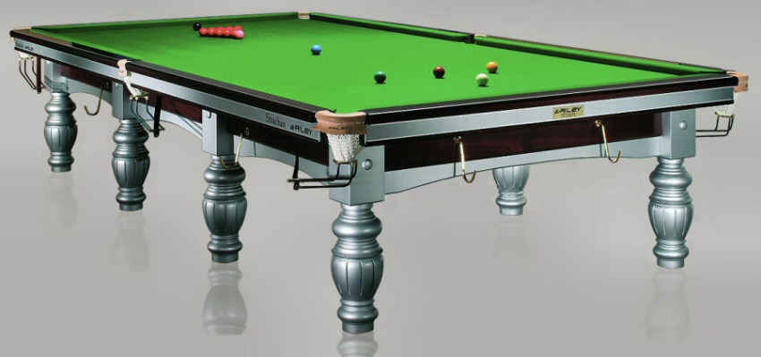
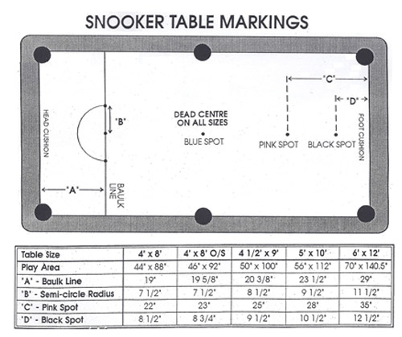

Маса
Снукър се играе на правоъгълна маса с размери 6 на 12 фута (около 1,83 на 3,66 метра) и 6 отвора (джобове) на масата - 4 в ъглите и 2, разположени в средата на дългите страни на масата. В единия край на масата, наричан боук край (от английски baulk - препятствие), е разположена боук линията, която отстои на 29 инча от късия борд на боук края на масата. Боук линията е очертана върху масите за снукър, както и полуокръжност с радиус 11,5 инча, обърнат към боук края. Другият къс борд е наричан горен борд.
Заради големите размери на стандартната маса за снукър, в някои ситуации, когато пространството за разполагане на масата е по-ограничено, се използват по-малки маси. Съществуват маси за снукър с дължина от 6 фута (половината от стандартната) и съразмерни показатели. При някои от тези маси се намалява и размерът на топките, но при други просто се намалява броя им на масата (само на червените топки).